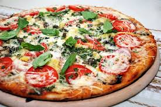

Сэндвич — блюдо, состоящее из двух или нескольких ломтиков хлеба и одного или нескольких слоёв мяса иили других начинок.
Стейк — толстый кусок обжаренного мяса. Стейк из лучших частей говядины обычно называется просто стейком

Вишня — підрід рослин із підродини мигдалеві. Більшість плодів видів з цього підроду їстівні.

Пі́ца— італійська національна страва. У піцу можуть додавати різні інгредієнти, такі як м'ясо, шинка, салямі, морські продукти, овочі, фрукти, гриби, зелень та інші.
Бра́уни — шоколадное пирожное характерного коричневого цвета ,прямоугольные куски нарезанного шоколадного пирога. Традиционно для американской кухни.
Смажені курячі крильця — це прекрасна закуска. Ситні, смачні, рум’яні
Шашли́к — м'ясо, смажене на деревному вугіллі, зазвичай з баранини, одна з найдавніших страв у світі.
Картопля фрі — популярна страва, що подається у закладах фастфуда